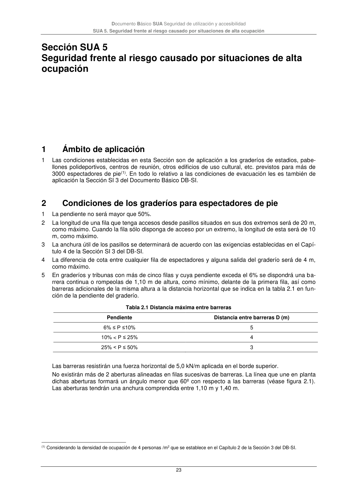

DB-SUA · 2.4 Iluminación de las señales de seguridad · versión 2022-06-14 · capa oficial
Formatos: JSON compacto · Markdown · PDF fuente
Ámbito del documento · texto del ámbito · documento y tablas
ID técnico a0077 · PDF pág. 22-23 · jerarquía no validada por persona · contrastado con el literal de la página 22 (marcador PDF); no validado por persona · padre: a0073
Iluminación de las señales de seguridad 1 La iluminación de las señales de evacuación indicativas de las salidas y de las señales indicativas de los medios manuales de protección contra incendios y de los de primeros auxilios, deben cumplir los siguientes requisitos: a) La luminancia de cualquier área de color de seguridad de la señal debe ser al menos de 2 cd/m2 en todas las direcciones de visión importantes; b) La relación de la luminancia máxima a la mínima dentro del color blanco o de seguridad no debe ser mayor de 10:1, debiéndose evitar variaciones importantes entre puntos adyacentes; c) La relación entre la luminancia Lblanca, y la luminancia Lcolor >10, no será menor que 5:1 ni mayor que 15:1. d) Las señales de seguridad deben estar iluminadas al menos al 50% de la iluminancia requerida, al cabo de 5 s, y al 100% al cabo de 60 s. Documento Básico SUA Seguridad de utilización y accesibilidad SUA 5. Seguridad frente al riesgo causado por situaciones de alta ocupación 23

PDF fuente redistribuible: copia fiel enlazada en esta página (SHA256 verificado).